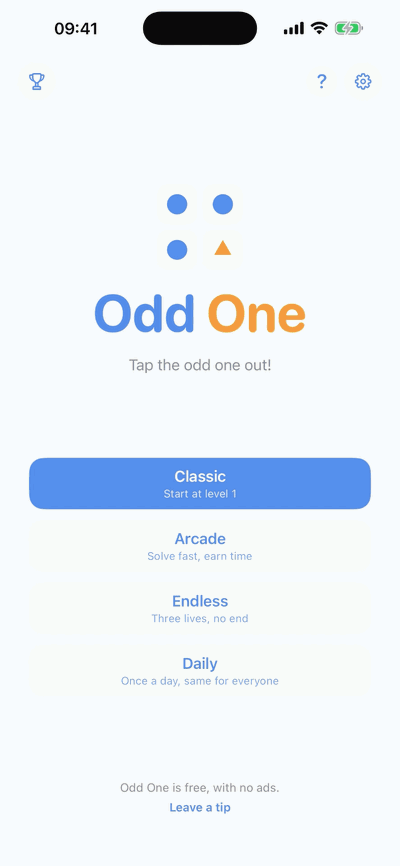
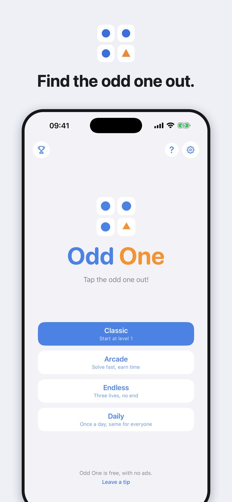
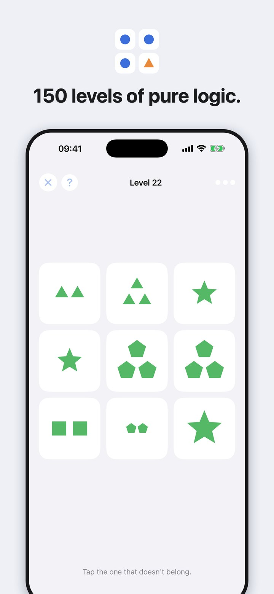
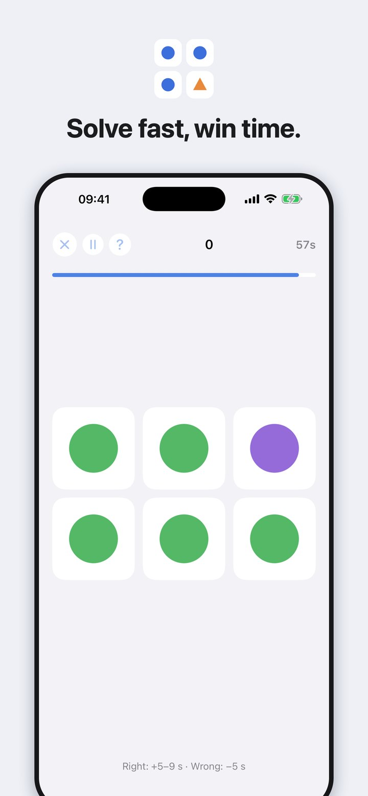
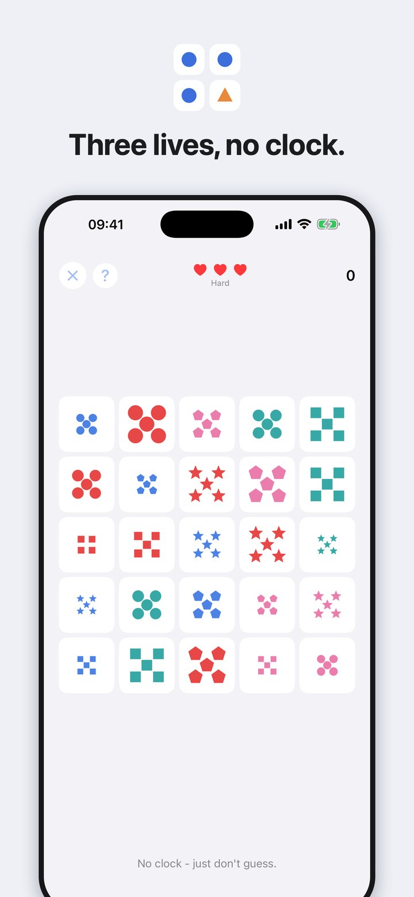
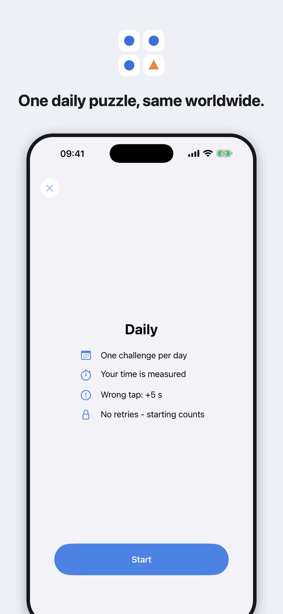

Out now on the App Store — current version 1.1.1.

Download assets (icon, screenshots, GIF, logo - ZIP, 2.2 MB)
Click for full resolution. Free to use in coverage of the game, credit "earls studio".





App Store: apps.apple.com/app/id6788079535
Press contact: Lucas Hesseldieck - oddone@earlsstudio.com
Copy-paste-ready texts. Do not edit ad hoc for individual outlets — if a text needs a variant, add it here so everything stays consistent.
Odd One is a calm, minimalist puzzle game for iPhone and iPad. A grid of symbols appears — one breaks a hidden rule of colour, shape, size, count or pattern. Tap it. Four modes, a playable home screen widget, soft piano music, completely free: no ads, no tracking, no account.
Odd One is built on a single idea: a grid of symbols, and one of them doesn't belong. The hidden rule changes — sometimes it's colour, sometimes shape, size or count — and finding the odd one out is the whole game.
Four modes shape that idea into different moods. Classic offers 300 levels with no time pressure, growing from small grids to 5×5; from level 151 the Extreme World adds pattern as a fifth dimension. Arcade runs on a 60-second time bank where every solved puzzle buys more time. Endless gives three lives, no clock, and four difficulty settings. The Daily mode serves five puzzles that are identical for every player worldwide, with solve time as the score and a streak to maintain.
The game is deliberately quiet: soft piano music, a clean light and dark interface, and a colour-blind assist mode. A home screen widget carries the idea outside the app: it holds a real mini puzzle that is solved without opening the game — not a shortcut and not a stats panel. It supports nine languages (English, German, French, Italian, Spanish, Portuguese, Japanese, Korean and Simplified Chinese), full VoiceOver support, Game Center leaderboards and iCloud sync.
Odd One is completely free. There are no ads, no tracking, no account and no paywall. The only monetisation is an optional tip jar that unlocks nothing — a thank-you, not a toll.
Odd One is the first game from earls studio, a one-person studio founded in Munich by Lucas Hesseldieck. He is not a trained developer: the game was built alongside a day job, with AI assistance making the work efficient — and then polished detail by detail, long past the point where it already worked.
| Name | Odd One (App Store: "Odd One – Tipp den Ausreißer") |
| Subtitle | Tap the odd one out! (German App Store subtitle: „Ruhiges Logik-Puzzle") |
| Developer | earls studio (Lucas Hesseldieck), Munich, Germany |
| Platform | iPhone and iPad, iOS 17 or later |
| Release | 19 July 2026 — out now worldwide. Current version 1.1.1 |
| Rating | 4.8 / 5 from 40 ratings (German App Store, 11 August 2026) |
| Price | Free — no ads, no tracking, no account, no paywall; optional tip jar that unlocks nothing |
| Modes | Classic (300 levels incl. Extreme World), Arcade (60-second time bank), Endless (3 lives, 4 difficulties), Daily (5 puzzles, identical worldwide, streaks) |
| Languages | English, German, French, Italian, Spanish, Portuguese (Brazil), Japanese, Korean, Simplified Chinese |
| Accessibility | Colour-blind assist, full VoiceOver support, Dynamic Type up to the largest accessibility sizes, Reduce Motion respected, light and dark mode |
| Features | Playable home screen widget (three sizes), Game Center leaderboards and 13 achievements, iCloud sync, calm piano soundtrack |
| Category / Rating | Games › Puzzle / Family, rated 4+ |
| Size | 23.8 MB |
| App Store | https://apps.apple.com/app/id6788079535 |
| Press contact | Lucas Hesseldieck, oddone@earlsstudio.com |
| Website | https://earls-studio.github.io |
earls studio is a one-person game studio from Munich, founded in 2026 by Lucas Hesseldieck. It makes small, calm, carefully finished games. Odd One (July 2026) and ECHO (August 2026) are free of ads and tracking and financed by optional tips; the third game, Blink Grid (August 2026), is free-to-play with non-personalised ads and optional purchases.
Copy-paste-fertige Texte. Bitte nicht pro Anfrage spontan umformulieren — wenn eine Variante gebraucht wird, hier ergänzen, damit alles konsistent bleibt.
Odd One ist ein ruhiges, minimalistisches Rätselspiel für iPhone und iPad. Ein Raster aus Symbolen erscheint — eines bricht die versteckte Regel: Farbe, Form, Größe, Anzahl oder Muster. Tipp es an. Vier Modi, ein spielbares Home-Widget, sanfte Klaviermusik, komplett kostenlos: keine Werbung, kein Tracking, kein Konto.
Odd One baut auf einer einzigen Idee auf: ein Raster aus Symbolen, und eines gehört nicht dazu. Die versteckte Regel wechselt — mal ist es die Farbe, mal Form, Größe oder Anzahl — und den Ausreißer zu finden ist das ganze Spiel.
Vier Modi geben dieser Idee unterschiedliche Stimmungen. Klassisch bietet 300 Level ohne Zeitdruck, vom kleinen Raster bis 5×5; ab Level 151 kommt in der Extrem-Welt das Muster als fünfte Dimension dazu. Arcade läuft auf einer 60-Sekunden-Zeitbank, jedes gelöste Rätsel kauft Zeit zurück. Endlos gibt drei Leben, keine Uhr und vier Schwierigkeitsgrade. Der Tages-Modus stellt fünf Rätsel, die weltweit für alle Spieler identisch sind — die Lösungszeit ist der Score, und wer täglich spielt, baut eine Serie auf.
Das Spiel ist bewusst leise: sanfte Klaviermusik, ein aufgeräumtes helles und dunkles Interface und ein Farb-Assistent für Farbenblinde. Ein Home-Widget trägt die Idee aus der App heraus: Es enthält ein echtes Mini-Rätsel, das sich lösen lässt, ohne das Spiel zu öffnen. Odd One unterstützt neun Sprachen (Deutsch, Englisch, Französisch, Italienisch, Spanisch, Portugiesisch, Japanisch, Koreanisch und Chinesisch), volle VoiceOver-Unterstützung, Game-Center-Ranglisten und iCloud-Sync.
Odd One ist komplett kostenlos. Keine Werbung, kein Tracking, kein Konto, keine Bezahlschranke. Die einzige Finanzierung ist ein freiwilliges Trinkgeld, das nichts freischaltet — ein Dankeschön, keine Maut.
Odd One ist das erste Spiel von earls studio, einem Ein-Personen-Studio aus München, gegründet von Lucas Hesseldieck. Er ist kein gelernter Entwickler: Das Spiel entstand neben dem Beruf und ließ sich mit KI-Unterstützung effizient aufbauen — und wurde danach Detail für Detail poliert, lange über den Punkt hinaus, an dem es bereits funktionierte.
| Name | Odd One (im App Store: „Odd One – Tipp den Ausreißer") |
| Untertitel | Ruhiges Logik-Puzzle (englischer Store: "Tap the odd one out!") |
| Entwickler | earls studio (Lucas Hesseldieck), München |
| Plattform | iPhone und iPad, ab iOS 17 |
| Release | 19. Juli 2026 — weltweit erhältlich. Aktuelle Version 1.1.1 |
| Bewertung | 4,8 / 5 bei 40 Bewertungen (deutscher App Store, 11. August 2026) |
| Preis | Kostenlos — keine Werbung, kein Tracking, kein Konto, keine Bezahlschranke; freiwilliges Trinkgeld, das nichts freischaltet |
| Modi | Klassisch (300 Level inkl. Extrem-Welt), Arcade (60-Sekunden-Zeitbank), Endlos (3 Leben, 4 Schwierigkeiten), Täglich (5 Rätsel, weltweit identisch, Serien-System) |
| Sprachen | Deutsch, Englisch, Französisch, Italienisch, Spanisch, Portugiesisch (Brasilien), Japanisch, Koreanisch, Chinesisch (vereinfacht) |
| Barrierefreiheit | Farb-Assistent für Farbenblinde, volle VoiceOver-Unterstützung, dynamische Schrift bis zu den größten Barrierefreiheits-Größen, heller und dunkler Modus |
| Features | Spielbares Home-Widget (drei Größen), Game-Center-Ranglisten und 13 Erfolge, iCloud-Sync, ruhige Klaviermusik |
| Kategorie / Altersfreigabe | Spiele › Rätsel / Familie, freigegeben ab 4 Jahren |
| Größe | 23,8 MB |
| App Store | https://apps.apple.com/app/id6788079535 |
| Presse-Kontakt | Lucas Hesseldieck, oddone@earlsstudio.com |
| Website | https://earls-studio.github.io |
earls studio ist ein Ein-Personen-Spielestudio aus München, gegründet 2026 von Lucas Hesseldieck. Es macht kleine, ruhige, sorgfältig fertiggestellte Spiele. Odd One (Juli 2026) und ECHO (August 2026) sind frei von Werbung und Tracking und über freiwillige Trinkgelder finanziert; das dritte Spiel, Blink Grid (August 2026), ist Free-to-play mit nicht-personalisierter Werbung und optionalen Käufen.